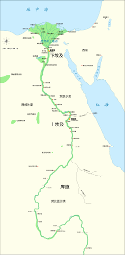

木乃伊的歷史背景
古埃及人相信靈魂在死後仍然存在，木乃伊化是為了保存肉體，使靈魂得以返回並重生。
導覽音樂
背景導覽音樂，模擬導覽效果。
古埃及文明地圖
這張地圖顯示了古埃及的文明中心，包括尼羅河沿岸的主要城市與木乃伊發掘地點。
補充影片
影片講述木乃伊的保存技術與背後文化。
古埃及人相信靈魂在死後仍然存在，木乃伊化是為了保存肉體，使靈魂得以返回並重生。
背景導覽音樂，模擬導覽效果。
這張地圖顯示了古埃及的文明中心，包括尼羅河沿岸的主要城市與木乃伊發掘地點。
影片講述木乃伊的保存技術與背後文化。